본문콘텐츠영역
directions
There are many ways to travel to the North Pole First of all, I'm going to decide which country in the Arctic Circle will be the base You can decide. The Arctic faces Russia, Alaska, Canada, Denmark, Norway, Sweden, and Finland.
-
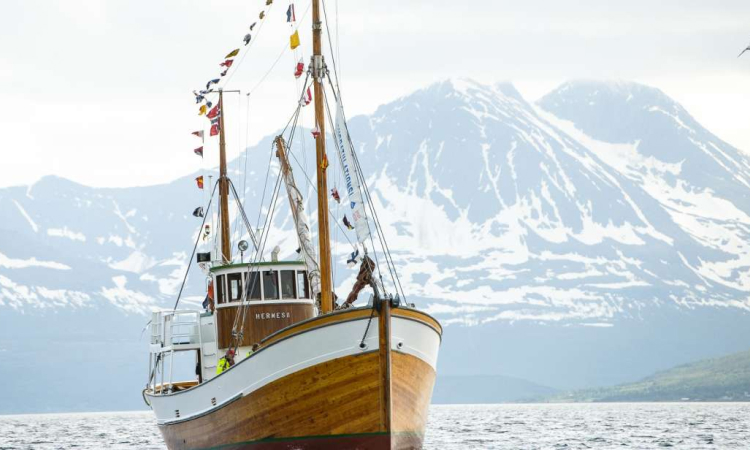cruise tour
The most common way for Europeans to travel to the North Pole is to comfortably cruise through the Arctic Ocean. You don't have to visit the North Pole because you can still enjoy the view there. In the case of Norway, people travel from the capital Oslo to Rungie Urban in Svalbard, and then take a cruise around the islands to the North Pole.
-
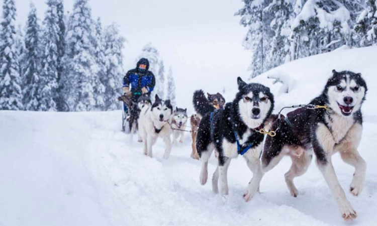snow sledding trip
A trip that is highly difficult and experiences extreme environments is a trip by snow sledding toward the North Pole. In Canada, they travel by light aircraft to the northernmost resort route, then to the Eureka camp, and then use snow sledding to reach the North Pole over a period of more than two months.
-
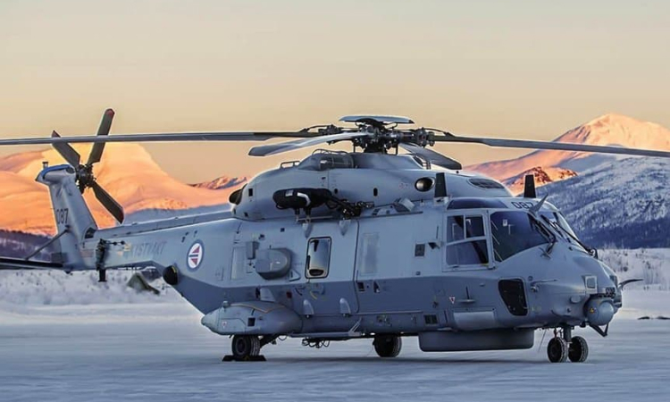helicopter tour
The most expensive helicopter trip in Greenland is to take an Airbus from the capital Copenhagen to Kangaroo Suak Airport in West Greenland, and back to Kangaroo Suak A small Dash 8 light aircraft travels through small airports in West and East Greenland to explore the surrounding villages and enjoy hiking.
-
sharp travel line
If you went to the Arctic, if you think we have to take the Arctic points, they should travel to the ice and travel line.I feel like 90 degrees in the ice. When we reach the Arctic, it's not so long, I put it on the camera It's good.
attraction
- 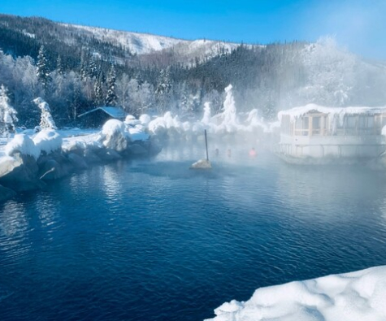 Hot Springs
-
Traveling to the North Pole is a step up to climate change, but if you are a single person who can spread awareness, traveling to the North Pole can motivate you to change your life. I wonder if anyone wants to go on a trip to the lively and terrifying unknown.
+more - 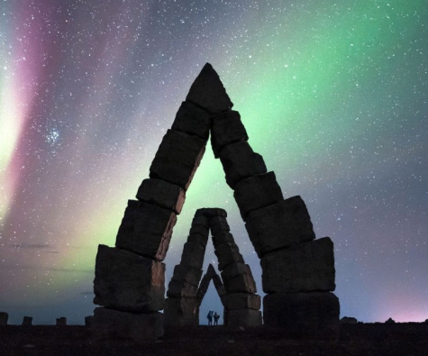 arctic
- 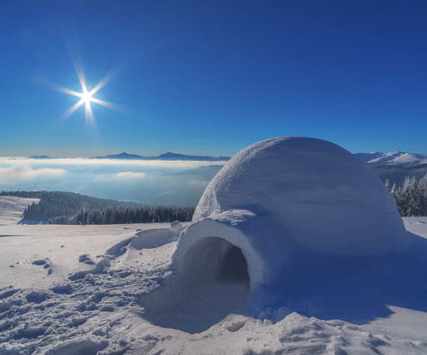 Igloo
- 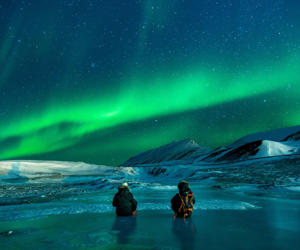 aurora
- 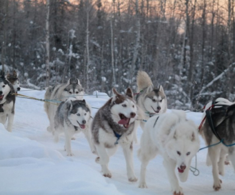 dogtrain
Are you looking for Arctic information?
animal
Animals have difficulty surviving on land where the ground is freezing. So animals in the Arctic have thick fur coats. In addition, the fat layer is very thick so that body temperature is not taken away. Many of the animals in the Arctic are endangered or are likely to face a crisis sooner or later. +more
- 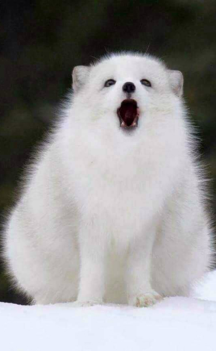
- 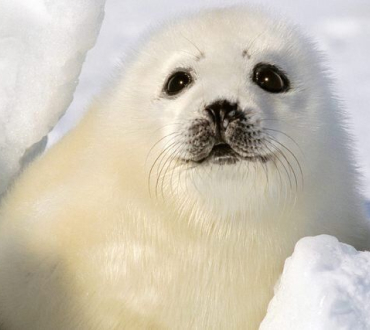
- 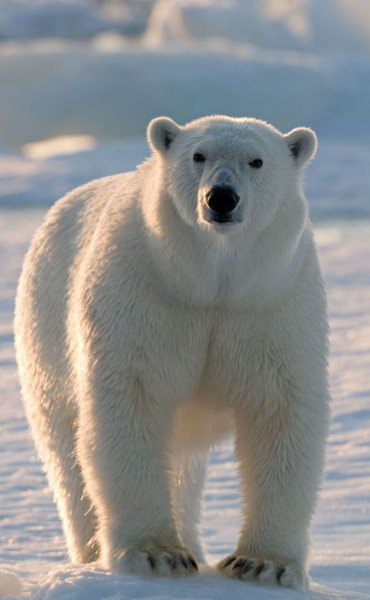
- 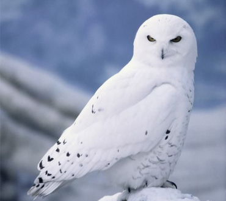
- 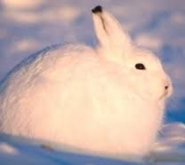
- 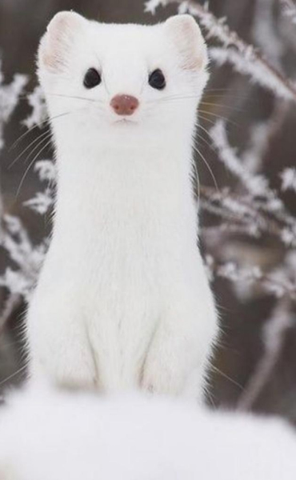
- 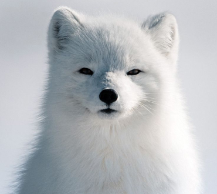
- 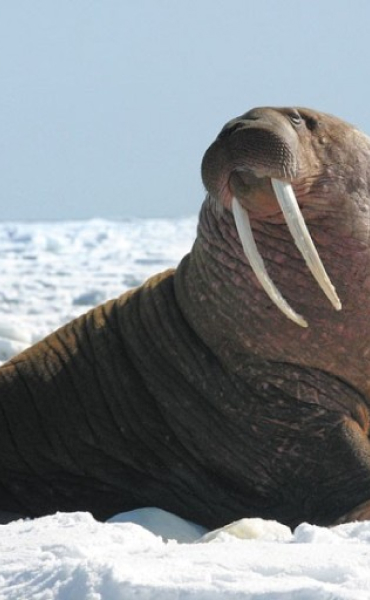
Signature Dish
The "fishless" recipe for Arctic Ukha fish soup stems from its proximity to the Barents Sea, which is home to Arctic crabs. It is as easy for locals to catch fresh crabs as making bread.
Crab is used to make broth with kelp, crabmeat, shrimp, scallops, and cloud berries (Arctic local berries that look like orange raspberries and taste like blackberries). This is a recipe from Svetlana Kozeiko, head chef at Tsarskaya Okhota restaurant.
+more- Ukha
- 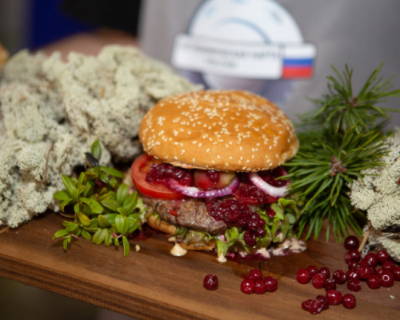Buger
- 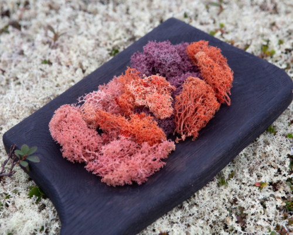Seaweed
- 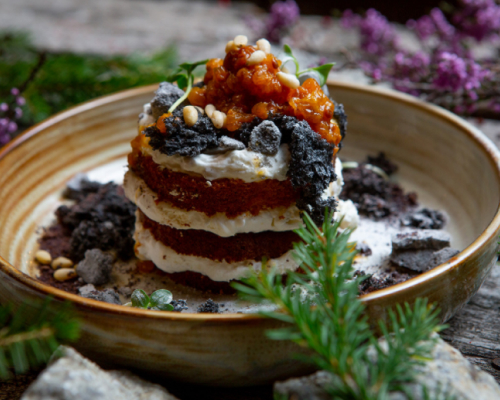Pancake
Please save the polar bear
Climate crisis
- 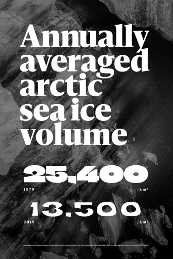
- 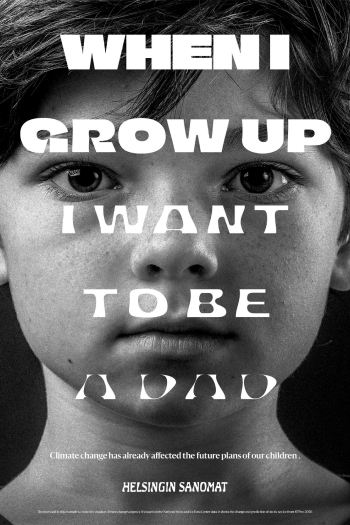
- 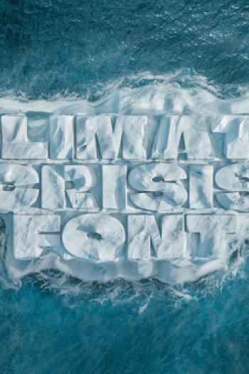
“I want to live”
At some point,
the Earth is crying out for our lives. It's changing little by
little every year, but in the long run, the Arctic ice volume is
expected to decrease significantly. Therefore, the Arctic is the fastest-growing
region of warming. It is judged by the presence or absence of annual
ice to determine how healthy glaciers are during the ice melt season.
Last year was the year with the least annual ice, This year, there are not many ice cubes left. In Korea, there are also concerns that the patterns of the four seasons, which were clear due to the effects of global warming, will gradually disappear. Contrary to these concerns, we do not know about the seriousness until we feel it firsthand. Just in time, fonts have emerged that will inform us of the seriousness of the climate crisis and create opportunities for awakening once again.
+more